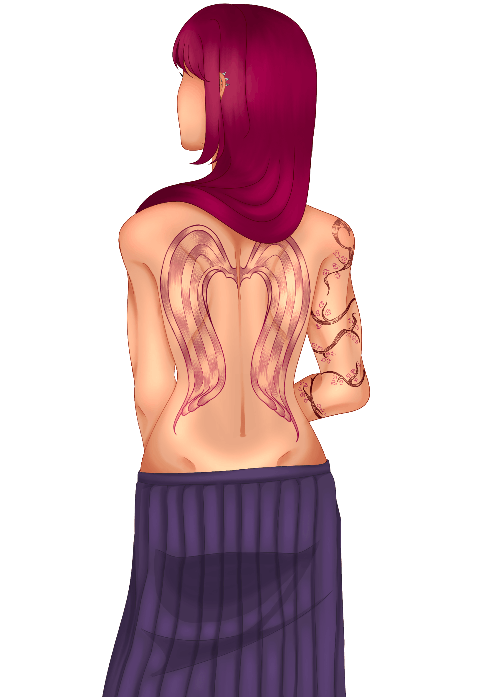

⊹₊˚‧︵‿₊୨ᰔ୧₊‿︵‧˚₊⊹
OC Guide ✧˖°
Welcome to this Original Character and Content Guide!
This website will be an intensive guide to all things original characters and creation, from the first idea to getting it down and the full design process and worldbuilding. Character creation, both the changing of a canon (pre-existing character) and the birth of something completely new from the corners of your mind, is one of the greatest ways of self-expression and creativity. Insert a character into a media universe of your choosing to think up interactions! Make a world never thought of before just to challenge yourself and have your own intricate universe and web of characters, their relationships and lives.
Every piece of media, comics, films, books - they’ve all first been someone’s original characters put onto paper or the web. ‘Fifty Shades of Grey’ was originally a Twillight fanfiction series, ‘After’ was a Wattpad Harry Potter fanfiction and comic books are quite literally just original characters in their purest form: someone thinking a certain power or superhero would be cool and writing and/or drawing it!
I’ll go over all the different ways in which you can participate in creation, whether original or fan-driven, and the little crooks of the internet that cater to these communities.
• . ݁₊ ⊹ . ݁꒰ঌ· Why make an original character? ·໒꒱ ݁ . ⊹ ₊ ݁. •
There's multiple different reasons! The ones that I've personally indulged in are:
- Yumeshipping
- To have your character interact with canon ones
- To create something you thought woiuld have elevated the plot in the original
Still wondering why?
- It's fun
- It's a creative outlet
- It's FUN!!!
It's not just limited to making singular characters or your own universe, creation also applies to changing a canon character, rewriting an already existing script to suit what you like or would have preferred to happen. That's the beauty of creativity!
There's no rules!Here's a terminology guide to help you get started on understanding a few words that'll be thrown around during your creative journey:
- Original character
- - plainly put, a character made by someone distinct from original characters in the media they're put into OR a being in an original world.
- Self-insert
- - a self-insert is an original character made as a stand-in for the creator, often a persona or version of oneself put into an existing world for more personal reasons
- Shipping
- - the act of pairing characters together, no limit on the amount, usually in a romantic way and thinking of them to be in a relationship or harbouring feelings for one another but not limited to romantic
- Yumeshipping
- - where in which someone uses their self-insert to interact with an existing character in a romantic manner, think of pairing in ships but one consists of the original character and the other the self-insert for the creator
- F/O
- - a term used in primarily yumeshipping to mean 'Fictional Other' like 'Significant Other'
- Canon
- - something that already exists in the story, whether that be the plot or a character and the way that they are
- Headcanon
- - imagining a canon character with features or attributes or anything that deviates from their original state to better suit the version of that character that feels more personal to you
And some examples and what they fall under.
| Example | Type |
|---|---|
| Creating a character unrepresentative of you to ship with a character | Original Character x Canon |
| Creating a character representative of you to ship with a character | Yumeshipping |
| Giving a canon character an attribute you have for representation | Headcanoning |
